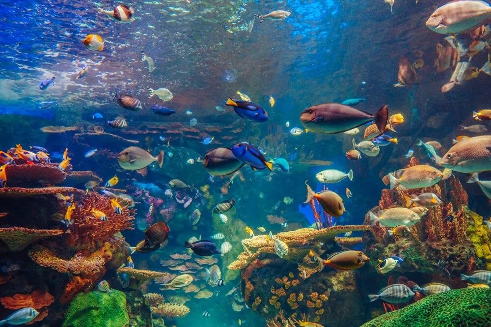

Biyolojik Çeşitlilik ve Gözlem
Akvaryum bölümü, tatlı su ve tuzlu su ekosistemlerinden seçilmiş yüzlerce balık ve deniz canlısını bir araya getirerek ziyaretçilere doğanın su altındaki zenginliğini yakından gözlemleme fırsatı sunar. Renkli tropik balıklar, mercan resiflerinden gelen canlılar ve yerel tatlı su türleri özel tanklarda sergilenir. Ziyaretçiler bu canlıların davranışlarını, beslenme alışkanlıklarını ve birbirleriyle olan etkileşimlerini gözlemleyerek su altı ekosistemlerinin çeşitliliğini somut bir deneyimle keşfeder. Akvaryumun atmosferi, özel ışıklandırma ve doğal dekorlarla desteklenerek canlıların güzelliklerini daha da ön plana çıkarır.